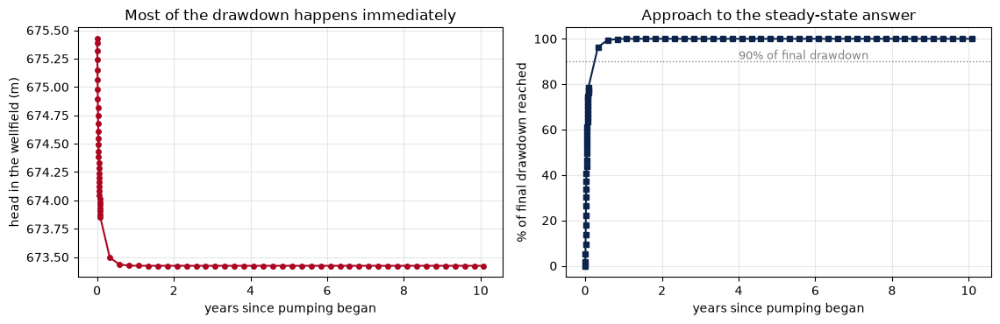

Models we’ve used so far has been steady state, the answer is what the aquifer settles down to if the stresses never change. That is a useful question and it is not the one water managers ask.
They ask things like when does the water table reach the pump intake? How long until the cone reaches the county line? How much of what we pump this year comes out of storage rather than out of recharge?
Answering those needs a transient model, which means time steps, storage properties, and stresses that vary. Additionally we will add one new package, EVT, for evapotranspiration.
Learning objectives
By the end of this notebook you can:
Set up multiple stress periods with perlen, nstp, and steady
Explain what sy and ss are and when each one applies
Vary a well’s rate between stress periods
Read a time series of heads out of the .hds file
Use the budget to say how much pumped water came out of storage
Add EVT and explain what the extinction depth does
Part 1 — Setup
from pathlib import Pathimport flopyimport matplotlib.pyplot as pltimport numpy as npROOT = Path("../..") # course repo rootDATA = ROOT /"data"MF_EXE = ROOT /"modflow"/"mf2005"assert MF_EXE.exists(), (f"MODFLOW binary not found at {MF_EXE}. Run ./postbuild.sh from a terminal.")RUN = ROOT /"_run"land_surface = np.loadtxt(DATA /"tucson_grid_top.csv", delimiter=",")NROW, NCOL, DELR =40, 60, 250.0AQ_TOP, AQ_BOT =600.0, 400.0WELL_ROW, WELL_COL =20, 30UA_RED, UA_BLUE, UA_SKY ="#AB0520", "#0C234B", "#81D3EB"print("ready")
ready
Part 2 — Time in MODFLOW
MODFLOW splits a simulation into stress periods, and each stress period into time steps.
A stress period is an interval over which every stress is constant. Change the pumping rate and you need a new stress period.
A time step is a solver interval within a stress period. More steps means a more accurate transient response and a slower run.
Three arrays in DIS control it:
Argument
Meaning
perlen
length of each stress period, in the model’s time units
nstp
number of time steps within each stress period
steady
one flag per period: steady state or transient
# steady state, then a 30-day period with DAILY steps, then ten annual periodsperlen = [1.0, 30.0] + [365.0] *10nstp = [1, 30] + [4] *10steady = [True] + [False] *11NPER =len(perlen)total_days =sum(p for p, s inzip(perlen, steady) ifnot s)print(f"{NPER} stress periods, {sum(nstp)} time steps")print(f"transient simulation covers {total_days:,.0f} days = {total_days /365:.1f} years")
12 stress periods, 71 time steps
transient simulation covers 3,680 days = 10.1 years
Why the odd 30-day period with daily steps?Why start with a steady-state period?
Running one steady-state period first, with no pumping, produces heads that are already in equilibrium. The stress periods after that is the response to the pumping you added.
n_transient_periods — how many periods are transient
days_per_annual_step — length of one time step in the annual periods
total_output_times — how many head snapshots a run will produce, if you save every time step
n_transient_periods =sum(1for s in steady ifnot s)days_per_annual_step =365.0/4total_output_times =sum(nstp)print(f'Number of transient steps: {n_transient_periods}')print(f'Days per annual step: {days_per_annual_step}')print(f'Total output timesteps: {total_output_times}')
Number of transient steps: 11
Days per annual step: 91.25
Total output timesteps: 71
Part 3 — Storage: sy and ss
A steady-state model needs no storage properties — nothing is changing. A transient one does, because water has to come from somewhere while heads fall.
Property
Symbol
Applies when
Typical value
Units
Specific yield
sy
unconfined — pores actually drain
0.05 – 0.30
dimensionless
Specific storage
ss
confined — water expands, matrix compresses
1e-6 – 1e-4
1/m
Note they differ by three to four orders of magnitude. A confined aquifer releases almost no water per metre of head decline, which is why confined drawdown propagates so fast and so far.
SY, SS =0.15, 1e-5cell_area = DELR * DELRthickness = AQ_TOP - AQ_BOTunconfined_release = SY * cell_area *1.0confined_release = SS * cell_area * thickness *1.0print(f"water released by 1 m of decline in one {DELR:.0f} m cell:")print(f" unconfined (sy = {SY}) {unconfined_release:10,.1f} m3")print(f" confined (ss = {SS:.0e}) {confined_release:10,.1f} m3")print(f" ratio {unconfined_release / confined_release:10,.0f}x")
water released by 1 m of decline in one 250 m cell:
unconfined (sy = 0.15) 9,375.0 m3
confined (ss = 1e-05) 125.0 m3
ratio 75x
The standard confined example we’ve been using
Our model is confined (laytyp=0), so ss is what governs it. Work out how much water the whole aquifer can supply from storage before the answer has to come from somewhere else.
storage_per_metre — water released by 1 m of head decline across all 2,400 cells
days_of_pumping — how many days of 20,000 m³/d that would cover
About 2 weeks is a good first upper bound. Even if the entire aquifer dropped a metre, storage could only cover that much time of this well. That is why a confined aquifer reaches something close to steady state so quickly: there is very little in storage, so the cone has to keep expanding until it intercepts enough recharge or boundary flow to balance the well. Run the same numbers unconfined and storage per metre goes up by a factor of sy / (ss * b) = 0.15 / (1e-5 x 200) = 75. That is over three years of pumping available from storage rather than two weeks.
Part 4 — A transient run
The well switches on at the start of year 1 and stays on.
WS = RUN /"week09_transient"WS.mkdir(parents=True, exist_ok=True)mf = flopy.modflow.Modflow("trans", model_ws=str(WS), exe_name=str(MF_EXE))flopy.modflow.ModflowDis( mf, 1, NROW, NCOL, delr=DELR, delc=DELR, top=AQ_TOP, botm=AQ_BOT, nper=NPER, perlen=perlen, nstp=nstp, steady=steady,)ibound = np.ones((1, NROW, NCOL), dtype=int)ibound[:, :, 0] =-1ibound[:, :, -1] =-1strt = np.full((1, NROW, NCOL), 660.0)strt[:, :, 0] =620.0strt[:, :, -1] =700.0flopy.modflow.ModflowBas(mf, ibound=ibound, strt=strt)# storage properties matter nowflopy.modflow.ModflowLpf(mf, hk=12.0, laytyp=0, sy=SY, ss=SS, ipakcb=53)# stress period 0 is the no-pumping steady state; the well runs from period 1wel_spd = {}wel_spd[0] = [[0, WELL_ROW, WELL_COL, 0.0]]wel_spd[1] = [[0, WELL_ROW, WELL_COL, -PUMP_RATE]]flopy.modflow.ModflowWel(mf, stress_period_data=wel_spd, ipakcb=53)flopy.modflow.ModflowRch(mf, rech={p: 1.2e-4for p inrange(NPER)}, ipakcb=53)flopy.modflow.ModflowPcg(mf)flopy.modflow.ModflowOc( mf, stress_period_data={(p, s): ["save head", "save budget"]for p inrange(NPER) for s inrange(nstp[p])},)mf.write_input()success, buff = mf.run_model(silent=True, report=True)assert success, "MODFLOW did not converge:\n"+"\n".join(buff[-20:])print("converged")
converged
Note the stress_period_data dictionary contains one entry per stress period, keyed by period number. That is how any stress varies in time, the well package, the recharge package, others in the flopy world work in a similar structure.
Pulling the heads
Pull the head history at the wellfield out of the file.
well_history — head in the well cell at every output time, as a 1D array
years — the output times converted to years since pumping began (the steady-state period occupies day 0–1, so subtract 1 day then divide by 365)
total_drawdown — head at the first output time minus head at the last
hds = flopy.utils.HeadFile(str(WS /"trans.hds"))times = np.array(hds.get_times())print(f"{len(times)} output times, from {times[0]:.1f} to {times[-1]:,.1f} days")print(f"first few: {np.round(times[:5], 1)}")
71 output times, from 1.0 to 3,681.0 days
first few: [1. 2. 3. 4. 5.]
data = []for t in times: data.append( hds.get_data(totim=t)[0, WELL_ROW, WELL_COL] )print(WELL_COL, WELL_ROW)data = np.array(data)data.shape
30 20
(71,)
well_history = np.array([ hds.get_data(totim=t)[0, WELL_ROW+10, WELL_COL+10] for t in times])years = (times -1.0) /365.0total_drawdown = well_history[0] - well_history[-1]
fig, axes = plt.subplots(1, 2, figsize=(11.5, 3.8))axes[0].plot(years, well_history, "o-", color=UA_RED, ms=4)axes[0].set_xlabel("years since pumping began")axes[0].set_ylabel("head in the wellfield (m)")axes[0].set_title("Most of the drawdown happens immediately")axes[0].grid(alpha=0.3)# how much of the final drawdown is reached by each timefraction = (well_history[0] - well_history) / total_drawdown *100axes[1].plot(years, fraction, "s-", color=UA_BLUE, ms=4)axes[1].axhline(90, color="grey", ls=":", lw=1)axes[1].text(4, 91, "90% of final drawdown", fontsize=9, color="grey")axes[1].set_xlabel("years since pumping began")axes[1].set_ylabel("% of final drawdown reached")axes[1].set_title("Approach to the steady-state answer")axes[1].grid(alpha=0.3)plt.tight_layout()plt.show()

How much of the drawdown happens immediately?
The right panel says the model reaches most of its final drawdown quickly. Here we put a number on it by calculating:
pct_after_one_year — percentage of the final drawdown reached after 1 year
years_to_90pct — the first time in years at which 90% is reached
np.argmax on a boolean array gives the index of the first True.
pct_after_one_year =float(np.interp(1.0, years, fraction))years_to_90pct =float(years[np.argmax(fraction >=90)])years_to_90pct
0.3321917951107025
Confined aquifers are usually nearly at steady state within a year or two. So for this system, the steady-state model from Week 7 was answering a question about the near future, not the distant one which is also worth knowing.
Try an unconfined aquifer with sy = 0.15. There the approach is slow enough that a steady-state model describes a condition on a much longer timescale.
Part 5 — Where transient water comes from
In a steady-state model the budget balances recharge against pumping. In a transient one there is a third source, the storage
def budget_by_period(list_path):"""Storage, recharge, wells and constant-head terms for each budget block.""" lines = Path(list_path).read_text().splitlines() starts = [i for i, l inenumerate(lines) if"VOLUMETRIC BUDGET"in l] records = []for s in starts: block = lines[s:s +30] half, terms ="in", {}for line in block: t = line.strip()if t.startswith("OUT:"): half ="out"if"="notin t or t.startswith(("TOTAL", "IN - OUT", "PERCENT")):continue name = t.split("=")[0].strip() terms.setdefault(name, {})[half] =float(t.split()[-1]) records.append(terms)return recordsblocks = budget_by_period(WS /"trans.list")print(f"{len(blocks)} budget blocks written")final = blocks[-1]for name, v in final.items():print(f" {name:16s} in {v.get('in', 0):11,.1f} out {v.get('out', 0):11,.1f}")
12 budget blocks written
STORAGE in 0.0 out 0.0
CONSTANT HEAD in 131,639.0 out 129,039.0
WELLS in 0.0 out 20,000.0
RECHARGE in 17,400.0 out 0.0
MODFLOW writes one budget block per stress period, at the end of it, not one per time step. So blocks[1] is the end of the 30-day period and blocks[-1] is the end of year 10.
Checking the change in storage
Compare the end of the first month of pumping with the end of year ten, and show where the water came from in each.
storage_early — net storage contribution in blocks[1] (in minus out)
storage_late — the same for blocks[-1]
storage_share_early — storage as a percentage of the pumping rate, early
The source of pumped water also changes over time, and is a very policy-relevant output.
After one month of pumping, about a quarter of the well’s yield is water taken out of storage, that is, a one-off withdrawal from the aquifer’s stock rather than a renewable supply. By year ten storage contributes essentially nothing, and the entire yield is “captured”: recharge that would have gone somewhere else, or flow diverted from the boundaries. The distinction between depletion versus capture is a key component of safe-yield regulation.
Part 6 — Evapotranspiration
Where the water table is shallow, plants and soil reach it. EVT removes water at a rate that depends on how deep the water table is. Remember, MODFLOW only represents fully-saturated flow so this is why it must be added separately. Do you think this is representative of the Tucson basin?
Three arguments:
Argument
Meaning
surf
the elevation at which ET is at its maximum rate
evtr
that maximum rate, as a flux (m/d)
exdp
extinction depth — how far below surf ET reaches zero
Between surf and surf - exdp, MODFLOW interpolates linearly. Below it, ET stops.
WS_ET = RUN /"week09_et"WS_ET.mkdir(parents=True, exist_ok=True)# A shallow-water-table version, so ET has something to work onmf_et = flopy.modflow.Modflow("et", model_ws=str(WS_ET), exe_name=str(MF_EXE))flopy.modflow.ModflowDis(mf_et, 1, NROW, NCOL, delr=DELR, delc=DELR, top=700.0, botm=400.0, nper=1, steady=True)ib = np.ones((1, NROW, NCOL), dtype=int)ib[:, :, 0] =-1ib[:, :, -1] =-1strt_et = np.full((1, NROW, NCOL), 690.0)strt_et[:, :, 0] =685.0strt_et[:, :, -1] =695.0flopy.modflow.ModflowBas(mf_et, ibound=ib, strt=strt_et)flopy.modflow.ModflowLpf(mf_et, hk=12.0, laytyp=0, ipakcb=53)flopy.modflow.ModflowRch(mf_et, rech=6.0e-4, ipakcb=53)ET_SURF =700.0# ET is at its maximum when head reaches 700 mET_RATE =3.0e-3# m/d, about 1100 mm/yr — riparian vegetationET_EXDP =200.0# m, extinction depthflopy.modflow.ModflowEvt(mf_et, surf=ET_SURF, evtr=ET_RATE, exdp=ET_EXDP, nevtop=1, ipakcb=53)flopy.modflow.ModflowPcg(mf_et)flopy.modflow.ModflowOc(mf_et, stress_period_data={(0, 0): ["save head", "save budget"]})mf_et.write_input()ok_et, buff_et = mf_et.run_model(silent=True, report=True)assert ok_et, "\n".join(buff_et[-15:])head_et = flopy.utils.HeadFile(str(WS_ET /"et.hds")).get_data()print(f"head {head_et.min():.2f} to {head_et.max():.2f} m")print(f"depth below the ET surface: {ET_SURF - head_et.max():.2f} to "f"{ET_SURF - head_et.min():.2f} m")
head 674.09 to 695.00 m
depth below the ET surface: 5.00 to 25.91 m
How much water could come from ET with this setup?
max_possible_et — ET_RATE times the area of all active cells
actual_et — the ET term from the budget (out side)
ET comes in below the maximum because the water table sits partway down the extinction interval, so MODFLOW applies a scaled rate, cell by cell. Why the extinction depth matters quite a bit by creating a feedback: pumping lowers the water table, which reduces ET, which leaves more water in the aquifer. So a fraction of what a well produces is not new water, it is water that would otherwise have been transpired by the vegetation along the river. This is a behavior/balance we see behind riparian habitat loss along the Santa Cruz river, and a model without an EVT package cannot represent it at all.
Before you leave
Kernel → Restart Kernel and Run All Cells
Fix anything that breaks
Save
What’s due
Nothing for now, we will revisit on Thursday due to jury duty uncertainty.
Next week
Layered models, rivers, and loading a model somebody else built, followed by a guided Thursday model-comparison workshop.
Stuck?
stress_period_data must have an entry for every stress period, or FloPy reuses the previous one silently. Build it with a dict comprehension.
A transient model that runs but shows no change usually has steady=True in every period — check the DIS flags.
KeyError on a budget term means the package didn’t write to the budget file: add ipakcb=53.
If the heads barely move over ten years, check ss — a value of 1e-7 makes the aquifer respond almost instantly.